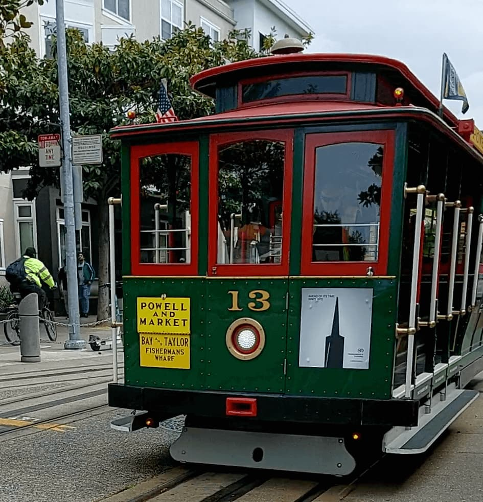

Фритрек и нулевой спринт: Подготовка к работе

<total recall>
Это было самое начало пути. На этом этапе важно было проникнуться основами и настроиться на учёбу. И, возможно, подумать, как новые знания могут повлиять на ваше будущее.
Нулевой спринт. Выдёргивал какие-то знания из далёкого прошлого времён HTML4. Была надежда вначале, что получится проехать с ветерком на старых знаниях. Надежда потихоньку угасала. Пришло понимание, что очень много поменялось в вёрстке. В лучшую сторону. Укрепилось желание пройти до конца курс. Одним словом - в дорогу за новыми знаниями…